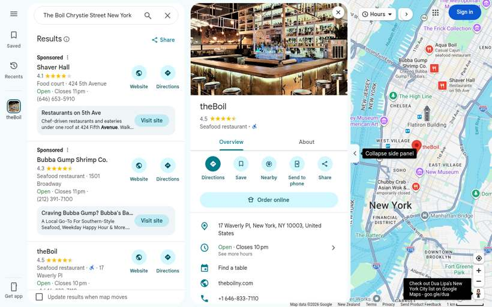
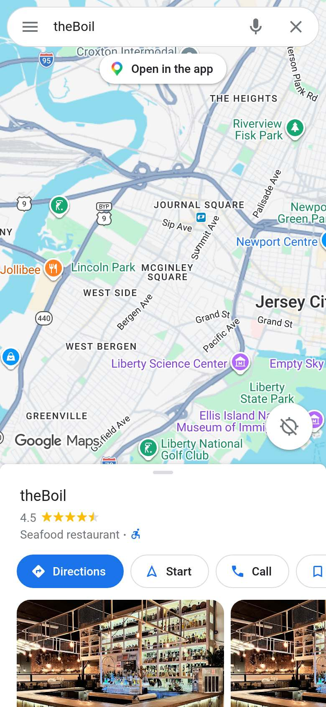
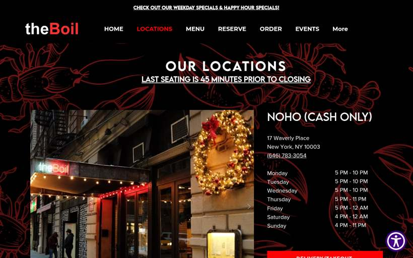

theBoil
United States · 19 photos · tap for source
🛋️ Fit-out0 photos
No fit-out photos for this venue yet.
🦞 Food18 photos · ← → / swipe / tap to enlarge


⚑ Highlightsflagged for Seb · sourced
- Where43 sites found on Google Maps (lower bound)New York NY · checked Google Maps sweep 20 Oct 2026 locations ↗
- NZ/AUUnknown
- LookWhat stands out in the photoslobster (10) · boil-in-a-bag (10) · tipped onto paper (10) · crab legs/whole crab (7) · buckets/pails (5) · big trays (2) · gloves + bibs (2) Source: CLIP tags, attrs.json
- Photos0 fit-out · 18 food · 1 otherTap any photo caption for its source page.
📍 43 sites found on Google Maps (lower bound) (Google Maps sweep 20 Oct 2026)Unknown
Listing & website

Google listing · desktop
Google listing · phone
Website · homeWebsite · home · phoneWebsite · menu📍 43 branches found on Google Maps (20 Oct 2026, lower bound)
- The Boiling Pot Prichard, 3704 Airport Blvd · ★4.3 (1,793)
- The boil Downtown LR Little Rock, 801 S Chester St · ★3.7 (15)
- The Boiling Crab South San Jose Hills, 18922 Gale Ave · ★4.6 (3,482)
- The Boiling Crab Silver Lake, 3377 Wilshire Blvd Unit 115 · ★4.5 (3,667)
- The Boiling Crab Garden Grove, 13892 Brookhurst St · ★4.6 (1,948)
- The Boiling Crab Torrance, 22901 Hawthorne Blvd · ★4.2 (407)
- The Boiling Crab Florin, 6910 65th St #100 · ★4.3 (2,446)
- The Boiling Crab Fairbanks Ranch, 9015 Mira Mesa Blvd · ★4.5 (2,246)
- The Boiling Crab Rosemead, 3514 Rosemead Blvd · ★4.4 (2,101)
- The Boiling Crab Seven Trees, 71 Curtner Ave Ste 20 · ★4.5 (2,961)
- The Boiling Crab Westwood, Los Angeles, 10875 Kinross Ave · ★4.5 (2,674)
- The Boiling Crab Calabasas, 23397 Mulholland Dr · ★4.5 (1,199)
- The Boiling Crab Burbank, 140 Palm Ave Unit 210 · ★4.5 (2,216)
- The Boiling Crab Alhambra, 129 W Main St · ★4.5 (2,094)
- The Boiling Crab Santa Ana, 1500 W MacArthur Blvd · ★4.6 (3,676)
- The Boiling Crab Tustin, 13451 Newport Ave · ★4.4 (30)
- The Boiling Crab Garden Grove, 14241 Euclid St c116 · ★4.6 (2,077)
- The Boiling Crab San Marcos, 110 Knoll Rd · ★4.3 (270)
- The Boiling Crab Seven Trees, 1631 E Capitol Expy · ★4.4 (1,911)
- The Boiling Crab Sacramento, 1000 K St #100 · ★4.4 (2,232)
- The Boiling Crab - TO GO Garden Grove, 13908 Brookhurst St B · ★4.1 (32)
- The Boiling Station Visalia, 3298 S Mooney Blvd · ★4.0 (244)
- The Boiling Crab South Miami, 5829 SW 73rd St · ★4.3 (804)
- The Boiler Seafood Atlanta Druid Hills, 2425 Piedmont Rd NE · ★3.5 (2,434)
- The Boiling Crab Honolulu, 330 Coral St · ★4.2 (843)
- The Boil Cajun Seafood Chicago, 1805 W Division St · ★3.8 (275)
- The Boiler Shrimp & Crawfish Skokie, 3445 Dempster St · ★4.4 (1,106)
- The Boiling Spot Breaux Bridge, 273 Rees St · ★4.7 (224)
- The Boiling Crab Cambridge, 96 Winthrop St · ★4.5 (325)
- The Boiling Crab Spring Valley, 4025 S Decatur Blvd · ★4.4 (3,774)
- The Boiling House Seafood Boil Restaurant Greentree, 1990 E Marlton Pike · ★4.4 (1,369)
- The Boiling Point Point Pleasant · ★4.9 (69)
- The Boil Shack Roessleville, 59 Wolf Rd · ★4.3 (1,257)
- The Boiling Palace Brooklyn, 6329 Avenue N · ★4.4 (106)
- theBoil New York City, 17 Waverly Pl · ★4.5 (2,512)
- theBoil Prime Brooklyn, 242 Flatbush Ave · ★4.0 (234)
- The Boiling Cajun (Home of the Build-A-Boil) Weatherford, 809 S Main St · ★4.0 (949)
- The Boiling Crab Richardson, 13340 Audelia Rd #106 · ★4.4 (3,713)
- The Boiling Crab Plano, 1517 N Central Expy · ★4.2 (1,483)
- The Boiling Crab Austin, 6406 N Interstate Hwy 35 #2375 · ★4.2 (539)
- The Boiling Crab Richmond, 2053 W Broad St · ★4.5 (133)
- The Boiling Crab Washington, D.C., 400 H St NE · ★4.0 (449)
- The Boiler 55 Bratenahl, Ohio, 1253 E 55th St · ★3.8 (34)